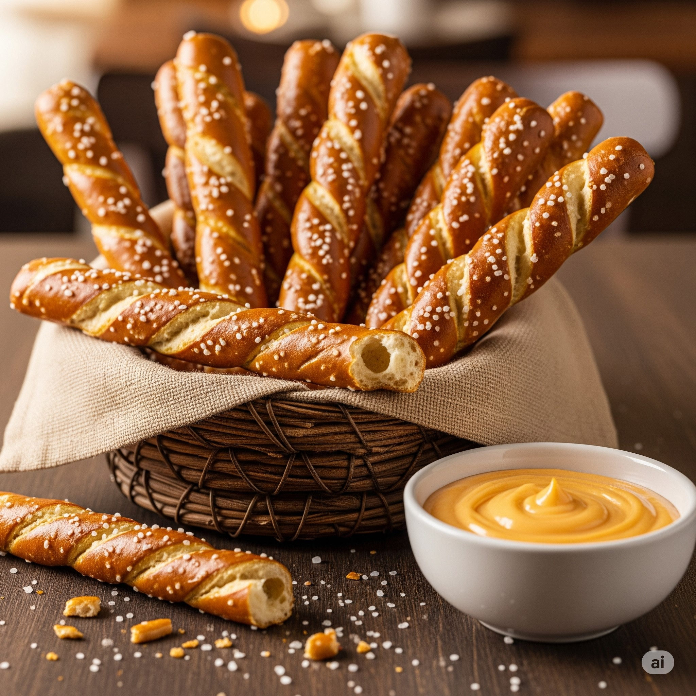

Home
Pretzel Sticks

Description
Satisfy your cravings for salty things with these crunchy and
flavorful pretzel sticks, ideal for gatherings or just
a mid afternoon snack.
Ingredients
Pretzel Sticks
- 500 ml warm water (38°C)
- 72 gr brown sugar
- 14 gr dry yeast
- 60 ml neutral oil (peanut, sunflower, corn, etc.)
- 825 gr all purpose flour (and a little more for dusting)
- 6 gr fine sea salt
Lye bath
- 1 kg. filtered water
- 30 gr. food-grade lye
Steps
- Mix together water, sugar and yeast in a large bowl.
let it rest for 10 minutes. The yeast should be completely
dissolved and foaming. Mix in the oil.
- In a separate large bowl, whisk in together the flour and salt.
Add the liquids and begin mixing until a dough is formed.
Let ir rest for 5 min and then knead it until it begins to pull away
from the sides of the bolw. Let it rest 5 more minutes.
- After the dough has rested, if it keeps sticking to the sides of the bowl.
flour the surface where you will work on, if not, just turn int on a clean
surface. Continue kneading it until the dough is smooth and elastic.
Transfer the dough to a grased bowl and cover it with greased plastic wrap
and let it rise for 45 minutes or until it doubles in size.
- Preheat the oven to 250°C. Line your baking sheets with baking wax paper.
Turn the dough on a clean surface and divide it into 24 equal pieces. Roll
each piece into a ball, cover them with a damp towel and let them rest for 15 minutes.
Then roll them into 20 cm. sticks.
- Using rubber or nitrile gloves, mix the water and lye into a metal or glass bowl
to make the lye bath. Be careful not to make contact with eyes or skin.
- When the lye bath is ready, soak 4 to 6 pretzel sticks for about 20 seconds.
Then tranfer them with gloved hands into the baking sheet, leaving 2 cm between
them.
- Sprinkle the pretzels with flaky sea salt and bake one sheet at a time for about
10 to 15 minutes or until deep brown